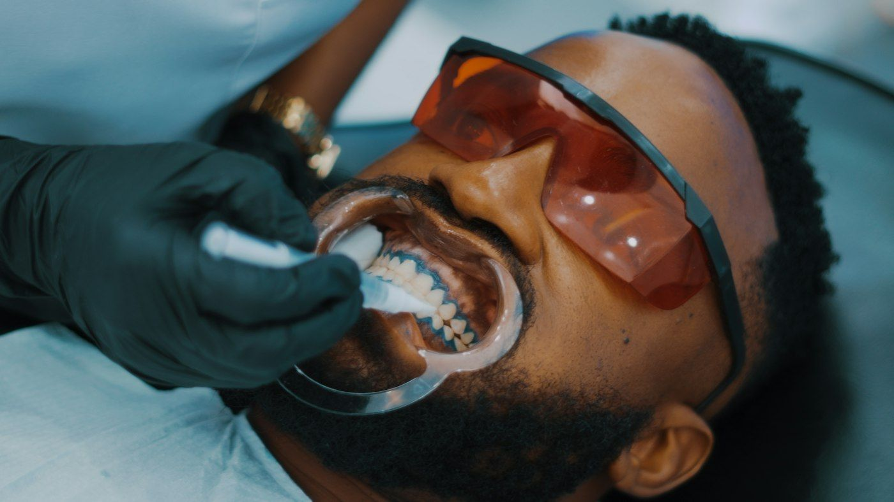

Soins
Bilan et détartrage
Le contrôle complet de vos dents et de vos gencives, suivi d'un détartrage et d'un polissage.
Ce que l'on explore
- Examen des dents et des gencives
- Détartrage aux ultrasons
- Polissage
- Conseils de brossage
Préparation
- Avant : brossez-vous les dents
- Après : évitez café, thé et tabac pendant 1 h
- Un contrôle tous les 6 mois